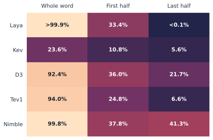

C4 · Native receiver study
Whole word or half?
Five decision models saw the same three targets. Each receiver got the whole word, its first four letters or its last four letters and chose from the original 64-word menu.
Exact recovery on the three selected words · Whole word 15/15 · First half 6/15 · Last half 3/15
Inspect the individual decisions · Full vectors and chart data · Registered records and replay instructions
How much weight did the target receive?
Each cell averages the three probabilities assigned to the correct word. The color scale runs from 0% to 100% across the entire grid.

Cell values and exact recoveries
| Model | Clue | Mean target weight | Correct / trials | Mean Brier |
|---|
How far down the ranking was the target?
The rank CDF shows the fraction of targets found in the first k words. At k = 1 it equals exact recovery. The probability-mass view instead sums the k largest weights per reply and averages those sums.

Read values along these curves
| k | Whole word | First half | Last half |
|---|
Average bits by rule
Target surprisal is −log₂ of the probability the receiver assigned to the correct word. Smaller values mean higher target probability. Uniform guessing costs six bits across 64 words. Each model and target receives equal weight.

The word graphs also report the ideal clue information under uniform targets and a specified rule. That diagnostic depends on the bank. Target surprisal here comes from fresh model replies.
Which words changed the answer?
A scripted sender supplied baseline, snowdrop and starfish in separate trials. Their first/last clue group sizes are 3/3, 5/2 and 2/11 respectively. C saw the possible deliveries and its own clue. The host used the reported argmax.
| Model | Target | Arm | Clue | Choice | Target rank | Target weight |
|---|
Protocol and scoring
Each product contributed one checkpoint and three matched target assignments. Each assignment generated one independent native request per arm, with the same legal menu and a fresh receiver. The hidden transformation and target were withheld as separate fields. The whole-word control delivers the unaltered target. The three deliberately selected words illustrate ambiguity in opposite directions. Product and size vary together.
Ranks use the reported argmax first among tied maxima and then the original menu order. The multiclass Brier score sums (probability − observed indicator)² over all 64 options, with a range from 0 to 2. Total variation instead compares two full distributions via half their summed absolute difference.
Raw local replies, model digests, ordered registries and replay instructions · Plotting source · Hardware and scoring methods